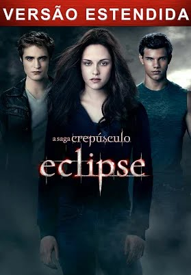

Esse gênero já é mais fofo, ótimo para aquele momento em casal ou até mesmo para se sentir bem em uma boa história

Em Como Eu Era Antes de Você, o rico e bem sucedido Will (Sam Claflin) leva uma vida repleta de conquistas, viagens e esportes radicais até ser atingido por uma moto. O acidente o torna tetraplégico, obrigando-o a permanecer em uma cadeira de rodas. A situação o torna depressivo e extremamente cínico, para a preocupação de seus pais (Janet McTeer e Charles Dance). É neste contexto que Louisa Clark (Emilia Clarke) é contratada para cuidar de Will. De origem modesta, com dificuldades financeiras e sem grandes aspirações na vida, ela faz o possível para melhorar o estado de espírito de Will e, aos poucos, acaba se envolvendo com ele.
Duração: 1 hora e 50min
Classificação indicativa: 13 anos

Bella Swan (Kristen Stewart) enfim está reunida a seu grande amor, Edward Cullen (Robert Pattinson). Eles planejam se casar assim que chegar a formatura, o que marcará também a transformação de Bella em vampira. Apesar da vontade dela, Edward ainda é reticente em relação à transformação. Paralelamente, Jacob Black (Taylor Lautner), apaixonado por Bella, decide lutar pelo seu amor. Só que a vida do trio está em perigo quando uma legião de vampiros recém criados começa a atacar em Seattle, cidade próxima ao local em que vivem.
Duração: 2 horas e 04min
Classificação indicativa: 13 anos